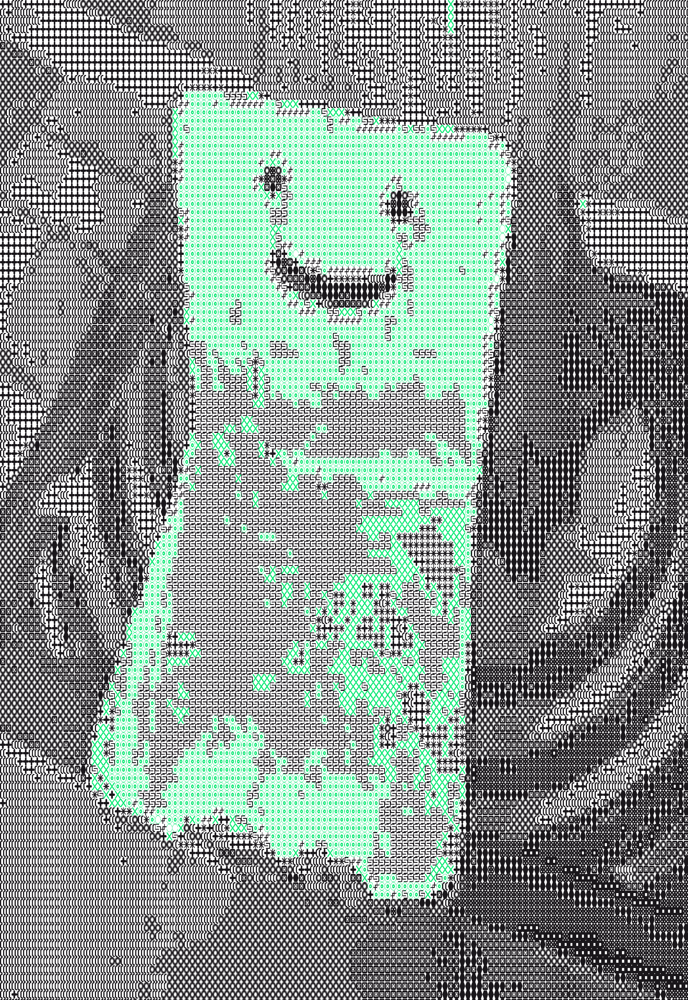
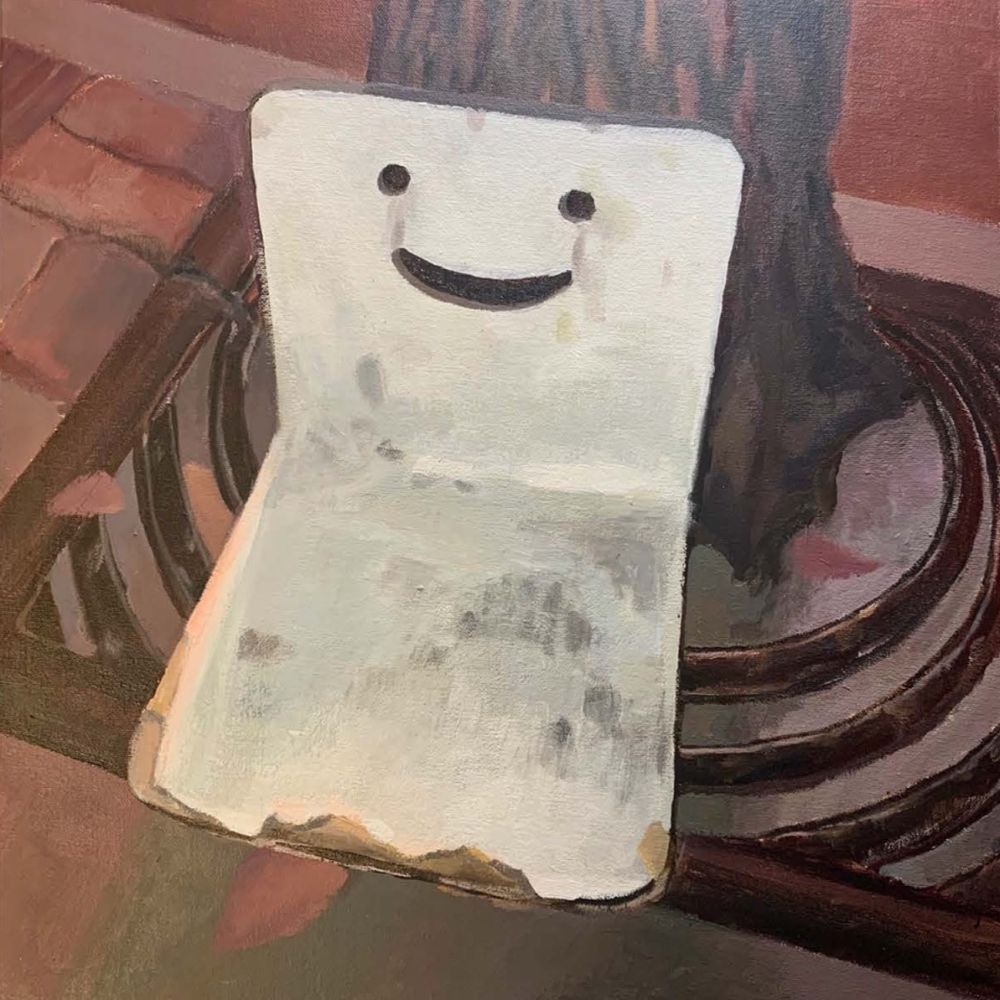
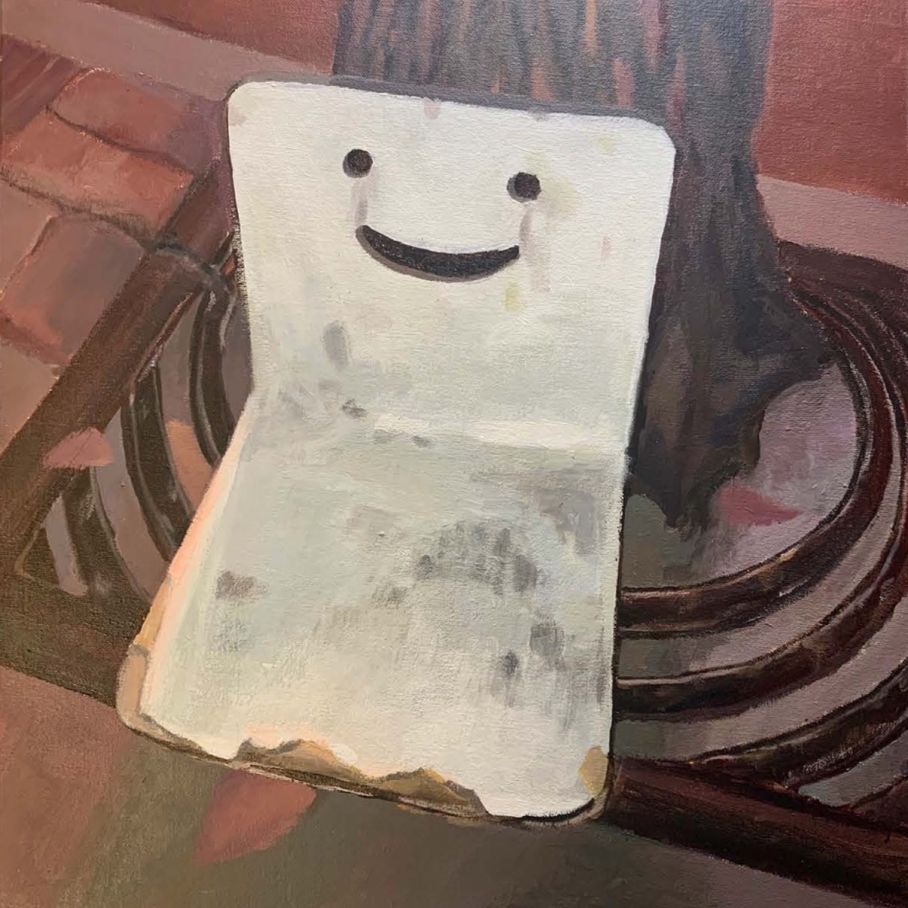

[B A C K]
happy chair.
This is a creative coding experiment using p5.js that translates my acrylic painting of a deserted chair next to the garbage bin. I took a picture of it when I walked pass. It looked kinda happy and kinda sad. Smile :)))).


P.S. Below is my acrylic painting.
